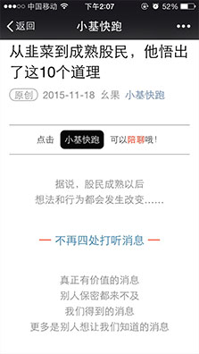
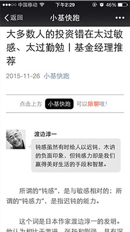
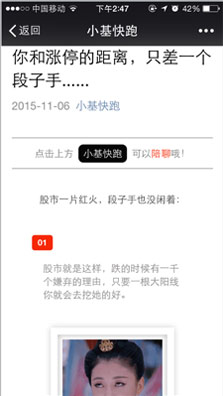
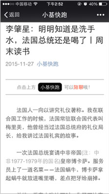
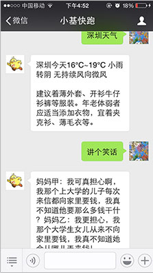

- 
- 
- 
- 
- 
我们关心股市
也关心债市精选原创：点击标题阅读全文
《徐翔和巴菲特之间，隔着十个西蒙斯》
《从韭菜到成熟股民，他悟出了这是个道理》
《史上最长债券牛市进行中！你需要知道这六件事》
《加杠杆这件事，有人倾家荡产，有人稳赚不赔》
……关注“小基快跑”，阅读更多干货
身经百战的基金经理
讲投资技巧 荐好文精选推荐：点击标题阅读全文
《大多数的投资人错在太过敏感、太过勤勉》
《投资总监：为什么说我们可以期待健康牛市？》
《听债券资金经理讲一讲债券那些事儿》
《后股灾时代，4大新锐基金经理为你指点迷津》
……关注“小基快跑”，获得更多推荐
定期发发段子
做做心理按摩精选段子：点击标题阅读全文
《不炒股的人，至少穷得很稳定》
《如果有人问你对大盘的看法，请先问他的仓位》
《你和涨停的距离，只差一个段子手》
《如何最有内涵地表达“我爱你”？》
……关注“小基快跑”，放松一下
除了小说、鸡汤
或许可以看看这些书周末读书：点击标题阅读全文
《李肇星：明明知道是洗手水，法国总统还是喝了》
《为什么美女大多数不认路？》
《只用十句话，史记教你过好这一生》
《死要面子的腐国被牛顿坑了100多年》
……关注“小基快跑”，多读书，读好书
超智能的公众号
陪聊 讲笑话 查天气
查快递 餐馆订座 ...关注小基快跑
删掉手机上的app
你将有更多内存